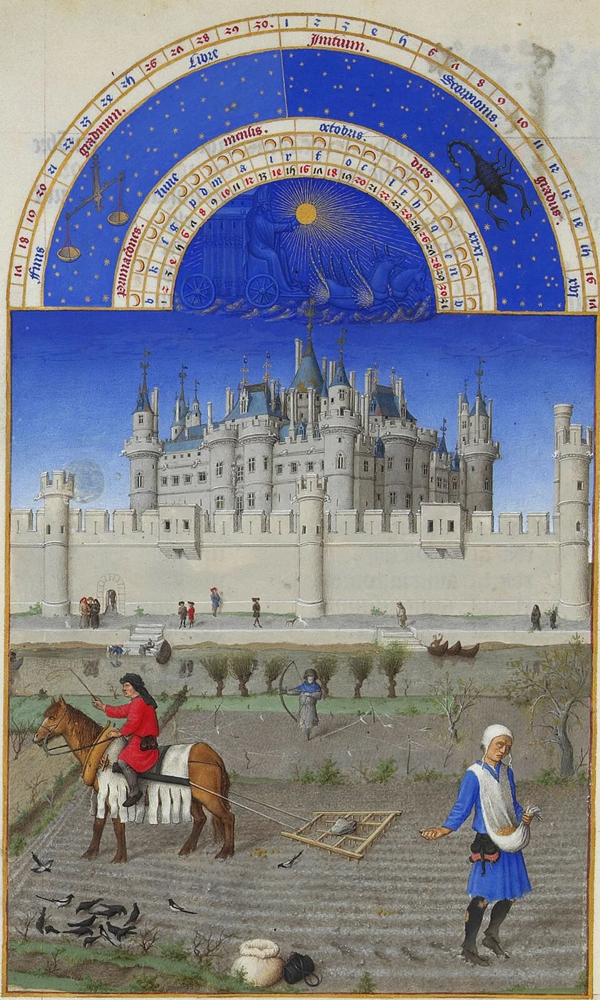
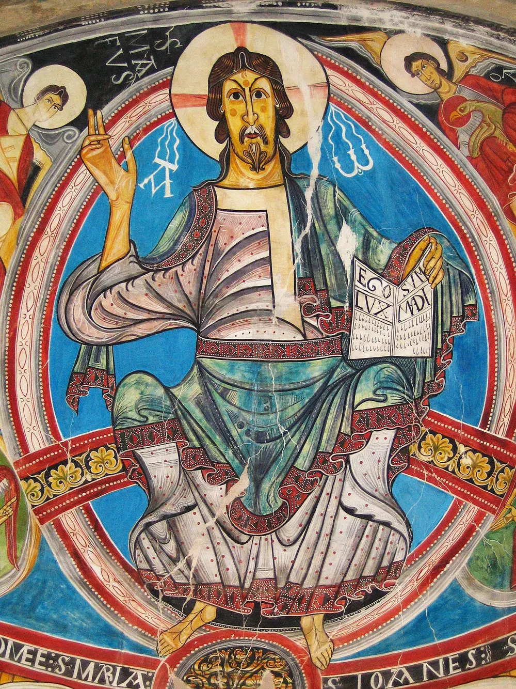

Presentació
Nou pantalles per tocar: punts sobre les miniatures, piràmide que es desplega, sacs de la collita, cartes dels mals usos amb votació i un constructor d'explicacions.
L'alumnat fa d'historiador amb fonts reals de l'edat mitjana: una miniatura del segle XV, un homenatge del Liber feudorum maior i la Sentència de Guadalupe. No memoritza la piràmide feudal: la dedueix de les fonts i acaba escrivint una explicació amb afirmació, prova i raonament.
Per què els pagesos obeïen el senyor feudal?

L'alumnat només veu la presentació a la pantalla tàctil i el full que té a la taula. La guia de raonament es fa servir a totes les sessions i es guarda a la carpeta.

Nou pantalles per tocar: punts sobre les miniatures, piràmide que es desplega, sacs de la collita, cartes dels mals usos amb votació i un constructor d'explicacions.

Tres pàgines (dues a acollida) amb les mateixes fonts a cada versió. Comença amb l'objectiu d'aprenentatge i acaba amb la metacognició.

Cinc passos (observo, dedueixo, connecto, explico, dubto) amb inicis de frase, connectors, una explicació model i la rúbrica per revisar-la.
Cada sessió recorre els passos de la guia. La presentació va primer i el full recull el que s'ha parlat.
| Quan | Què es fa | Presentació | Full |
|---|---|---|---|
| Dimarts 12:00 | El feu i el pacte. Lectura de la miniatura d'octubre en gran grup, en parelles (observo / dedueixo). Piràmide de qui dona i qui rep. L'homenatge: què promet qui posa les mans? | 1–4 | Ex. 1–3 |
| Dimecres 11:00 | La vida del pagès. L'any del pagès en quatre miniatures. Repartim la collita amb els sacs. Els mals usos: cartes i votació «és just?», amb debat argumentat. | 5–7 | Ex. 4–6 |
| Divendres 11:00 | Canvi i explicació. Línia del temps de 1123 a 1486. Construïm una explicació a la pantalla. Cada alumne escriu la seva i la revisa amb la rúbrica de la guia. Metacognició. | 8–10 | Ex. 7–8 i metacognició |
Totes les versions tenen les mateixes fonts, la mateixa pregunta i el mateix producte final. Canvia quanta ajuda escrita hi ha. La versió A ocupa les mateixes tres pàgines que la B: l'exigència és a la pregunta, i els criteris són escrits al full.
Les mesures universals arriben a tot el grup. Les altres es fan servir quan cal, sense treure ningú de la tasca comuna.
La informació arriba per imatge, text i veu. Es pot respondre escrivint, dibuixant o parlant. L'objectiu és visible al començament i es revisa al final.
Banc de paraules, opcions per marcar i frases començades. Les mateixes fonts, amb menys punts per observar. La guia és sobre la taula.
Dubtar de la font (qui la va pagar?), comparar dues obediències, buscar on són les dones i fer una cadena causal de 1348 a 1486. Proposta extra: investigar el castell del seu municipi.
Glossari de 11 paraules amb una imatge de la mateixa font, en català, castellà, anglès, àrab, urdú i xinès, i una columna per a la seva llengua. Al debat, vota amb les cartes.
 castell
castell pagès
pagès collita
collitaAvançar la sessió amb l'agenda visual (els cinc passos). Treball per passos, sense sorpreses: la presentació no té animacions sobtades i respecta «reduir moviment». Rol fix al grup i lloc tranquil per escriure.
Una sola tasca visible cada vegada: es pot donar el full pàgina a pàgina. Tocar a la pantalla com a pausa activa. Temps marcat per a cada exercici i comprovació a mig camí.
S'avalua l'explicació de l'exercici final amb la rúbrica de la guia (afirmació, prova, raonament, vocabulari i dubte). La metacognició no puntua: serveix per veure qui necessita què a la propera situació.
Text literal del currículum: Decret 175/2022, annex 3, Ciències socials: geografia i història. Criteris de 1r i 2n d'ESO.
Cercar i tractar informació que permeti interpretar el present i el passat, aplicant els procediments de la recerca històrica i geogràfica a partir de l'anàlisi crítica de dades procedents de fonts analògiques i digitals, per transformar-ho en coneixement i comunicar-ho en diferents formats.
Indagar i argumentar sobre problemes socials que resultin rellevants en l'actualitat, des del local al global, per desenvolupar un pensament crític i respectuós amb les diferències, que contribueixi a la construcció de la identitat individual i col·lectiva i a la consecució d'un present i un futur més just i inclusiu.
Interpretar els canvis i les continuïtats dels processos històrics, mitjançant la realització de projectes d'investigació i l'ús de fonts primàries i secundàries, per interpretar els problemes del món actual i fer propostes a favor de la pau, el benestar i el desenvolupament sostenible.
Totes de Wikimedia Commons. Els retalls i els pictogrames d'acollida surten d'aquestes mateixes imatges. El text de la Sentència de Guadalupe és una adaptació per a l'aula, no una cita literal.